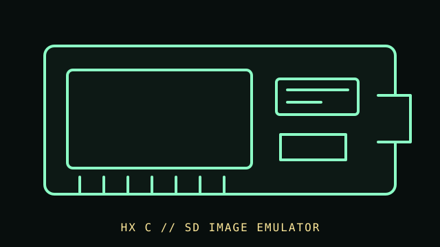

[ FLOPPY DRIVES // IDENTIFIED MODEL ]
Slim SD HxC Floppy Emulator
The Slim SD HxC is a floppy-drive emulator intended to stand in for a compatible disk mechanism at the host interface. It uses SD-card disk images and must be configured for the target host and image format.

MODEL IDENTIFICATION: Slim SD HxC Floppy Emulator; document PCB revision, firmware, jumper settings, display/control options, and label. The record distinguishes source-documented facts from model/revision-dependent behavior; it is not a compatibility guarantee.
Recorded specifications
| Catalog model | Slim SD HxC Floppy Emulator |
|---|---|
| Device type | SD-card floppy-drive emulator (not a magnetic drive) |
| Interface / connector | Host-facing floppy signals depend on the unit’s connector/model option; verify pinout, power, drive-select, and signal configuration from its manual. |
| Media / formats | SD card stores disk image files; emulated media format and geometry are firmware/image-setting dependent. An SD image is not a physical floppy disk. |
| Revision caution | Confirm the complete model designation, nameplate, connector, board/firmware revision, and service-manual edition. Related family names are not proof of interchangeable parts or host support. |
Host and controller compatibility
- Only compatible with hosts and disk-image formats documented for the exact Slim SD HxC model/firmware. An emulator may not reproduce copy protection, timing, flux transitions, or unusual analog behavior.
- Confirm pinout, supply voltage, drive select, motor/density signals, host BIOS/controller support, and mounting before installation. A 34-pin-shaped connector alone does not prove electrical compatibility.
- Firmware revisions and HxC model variants differ; keep a record of firmware, configuration tool, image conversion, and write-back settings.
Safe preservation and cleaning
This device contains no floppy heads or removable magnetic media to clean. Preserve SD-card contents with checksummed copies and retain original disk images read-only. Keep host power off while wiring; do not clean connectors with liquid or abrasive materials.
For preservation, photograph labels and connector/board markings before service; document the host, controller, software, settings, and observed condition. Keep original media or raw captures intact and verify checksummed copies before making derivatives.
Manufacturer manuals & archival references
- Slim SD HxC Floppy Emulator User Manual — Internet Archive mirrorDigitized model-specific user manual; confirm it matches the Slim SD board and revision in hand.
- HxC Floppy Emulator documentation and downloadsOfficial emulator project documentation and source; model and firmware variant matter.
- Library of Congress — Digital format sustainabilityPreservation context for documenting and retaining image files; not a compatibility specification.
Archive scans and project pages may cover a family or a particular revision. The full model/revision-specific manufacturer manual takes precedence. Capacity or recording mode is omitted where it cannot be tied to the cited model and format.